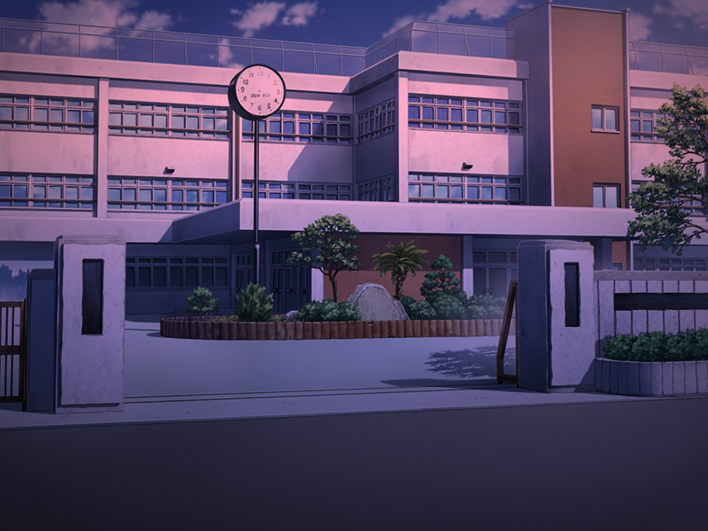
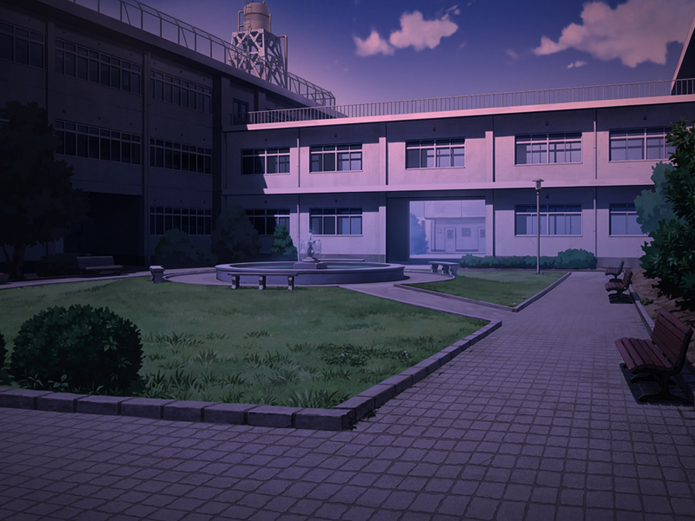

17:30
01Story物語
桜霞祭の前日。
台風の雨が、校舎を叩いていた。
放課後の旧校舎から、ピアノが聞こえた。後夜祭で弾かれるはずの『夕凪のワルツ』。
ひとつもよどみのない、きれいな演奏だった。
その四十分後。音楽室で、同じクラスの白瀬琴音が倒れているのが見つかる。
裏山の土砂崩れで、学校へ上がる道はふさがれた。警察が着くのは、早くても20時30分。
校内に残っているのは、クラスメイトと、担任と、用務員だけ。
疑いは、ひとりの生徒に集まっていく。
――残された時間は、二時間。

校門 ／ 桜霞祭の前日

中庭17:30旧校舎から、ピアノが聞こえた
18:10音楽室で、彼女が見つかる
20:30警察が、坂を上がってくる